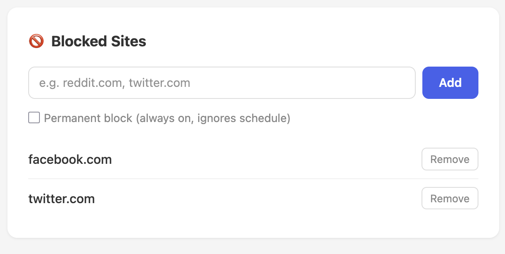
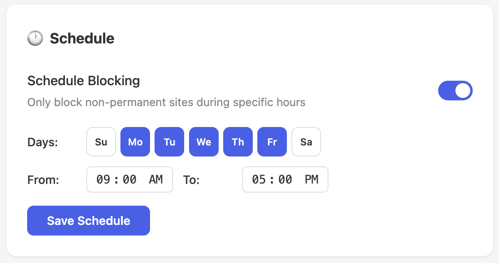
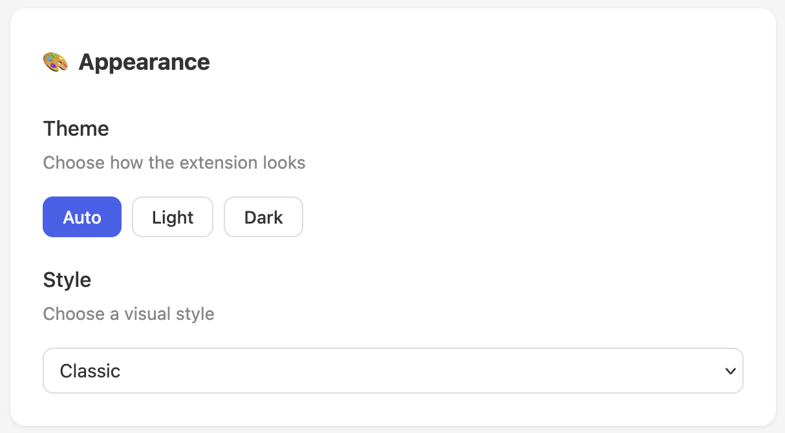

Install
Distracted Work is a browser extension that blocks distracting websites and reminds you to get back to work.
Available on Firefox
Install Extension →How It Works
- Install the extension from Firefox Add-ons.
-
Add sites you find distracting to your blocklist.

- When you visit a blocked site, you'll see a random motivational message reminding you to focus.
-
Optionally set a schedule so sites are only blocked during work hours.

Features
- Block any website by domain
- Temporary or permanent blocking
- Schedule-based blocking (e.g., 9 AM to 5 PM on weekdays)
- 17 visual themes (Nord, Catppuccin, Tokyo Night, Dracula, and more)
- Light, dark, and auto theme modes
- Zero data collection — everything stays on your device

Customize the look with themes and light/dark modes
Open Source
Distracted Work is open source. You can browse the code, clone the repo, or open an issue on GitHub.
git clone https://github.com/alloydwhitlock/distracted-work-mozilla-extension.gitView on GitHub · Report an Issue
Changelog
v1.0.0
February 2026
- Initial release
- Site blocking with temporary and permanent modes
- Schedule-based blocking
- 40 motivational redirect messages
- 17 visual themes
- Light / dark / auto theme modes